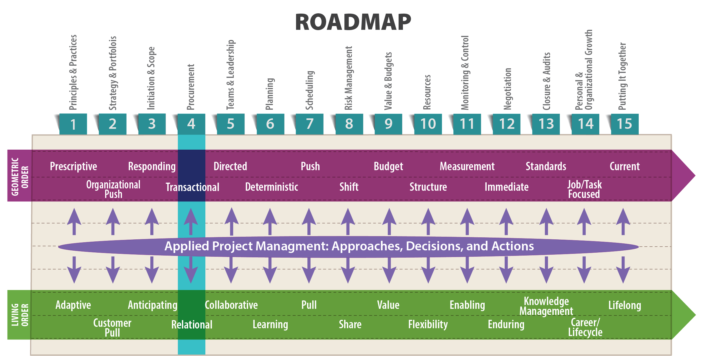
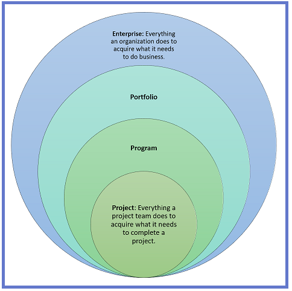
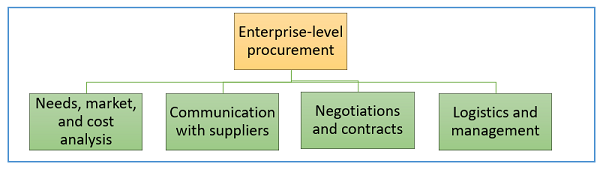
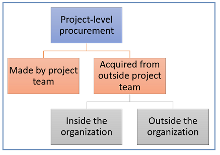
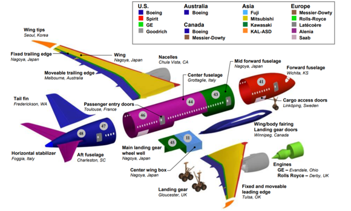
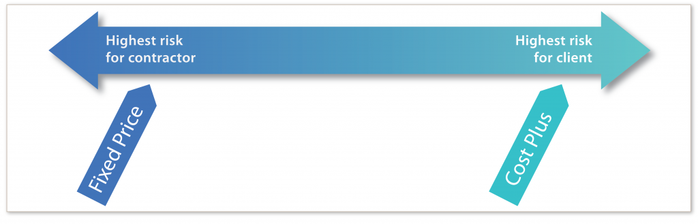

Risk comes from not knowing what you’re doing.
―Warren Buffett

Objectives
After reading this lesson, you will be able to
The Big Ideas in This Lesson
Maintaining a healthy supply chain—that is, cultivating a network of “activities, people, entities, information, and resources” that allows a company to acquire what it needs in order to do business—is a major concern for any effective organization (Kenton 2019). Supply chain management encompasses
the planning and management of all activities involved in sourcing and procurement, conversion, and all logistics management activities. Importantly, it also includes coordination and collaboration with…suppliers, intermediaries, third party service providers, and customers. In essence, supply chain management integrates supply and demand management within and across companies. (Council of Supply Chain Management Professionals n.d.)
When done well, supply chain management “results in lower costs and a faster production cycle” (Kenton 2019). It is a living-order discipline focused on protecting a supply chain from the evolving threats to which it is vulnerable. For example, here are just a few recent threats to American industries:
As a project manager, you will often have to focus on a core element of the supply chain—procurement. In its simplest usage, the term procurement means acquiring something, usually goods or services. For example, as a project manager, you might might need to procure any of the following:
In the construction field, project managers may spend a good deal of their time managing the entire procurement process, selling goods or services in some situations and purchasing goods or services in others. If that’s your situation, you might have to create proposals for the work you hope to do and then negotiate the contracts that will set the project in motion. On other projects, you might have to review proposals submitted by potential suppliers and then oversee the final contract with the selected supplier. Throughout, you’ll have to navigate the ins and outs of many relationships. By contrast, in manufacturing and product development, project managers often have little to do with procurement. In IT, project management is often closely tied to purchasing and overseeing the implementation of new software products. Whatever your procurement duties are, it’s essential to understand overall expectations and the established processes for procurement throughout your organization.
Supply chain management is a full-blown profession, with people pursuing degrees and certificates devoted to the topic. However, in the early days of U.S. commerce, the role of purchasing the goods and services a company needed in order to conduct business was not given much thought (Inman 2015). This was true up until the late 1960s and 1970s, when the oil crisis and a worldwide shortage of raw materials forced business to recognize purchasing as a vital competitive issue. An entirely new type of management, supply chain management, was born.

As shown in Figure 4-1, procurement takes place on multiple levels throughout an organization. At the broadest, enterprise level, the term procurement refers to everything an organization does to acquire what it needs to do business. At the project level, procurement refers to everything a project team does to acquire what it needs to complete a project. Adding to the complexity, portfolio and program managers have their own procurement needs, which sometimes conflict with the needs of other managers with the enterprise. A lack of alignment among these various needs can make success for individual projects impossible. Worse, it can sabotage the larger business goals of the entire enterprise.
Among other things, procurement includes:
In an established organization, a project manager’s duties are simplified by the procurement function, which provides the organizational framework, policies, and procedures for acquiring necessary resources. (See Figure 4-2.) In startups and other less mature organizations, establishing procurement strategies to ensure the organization’s long-term well-being may not yet be a high priority. In that case, procurement may be less well defined and more focused on the project-level., with project managers left to manage resource acquisition on their own.

Project-level procurement sometimes involves getting what you need to complete the project from the project team itself. For example, on a construction project, the team might be responsible for building kitchen cabinets. Other goods and services might be acquired from outside the project team; others from outside the organization, or from inside the organization, from other teams or departments . In some situations, procurement within the organization is a major concern for project managers. (See Figure 4-3.)

To make good procurement choices for your projects, you need to understand where your project fits within the portfolio and the program. You also need to look at the big picture, and think strategically about procurement, both on behalf of your organization and on behalf of your project team. That means you might need to acquire a product just to maintain a foothold in a tight supply chain. For example, if you’re 75% certain that you’ll need a piece of computer hardware that is currently in short supply, you might choose to go ahead and procure it because you know that not having it when you need it will bring your project to a full stop.
Keep in mind that you can’t really think strategically about your organization’s procurement needs until you understand the logistics of procurement in your organization. Among other things, you should make sure you understand the following:
In an ideal world, the contract resulting from a procurement process is a formal expression of a trusting relationship that already exists between two parties. Even in a less than ideal world, to achieve the best possible results, it can be helpful to think of procurement as a relationship-building process, one that can span many years. It is a form of networking that inexperienced engineers might dismiss as mere schmoozing but is in fact a means of identifying and cultivating the people and organizations who can help you complete your existing projects, develop opportunities for new ones, and advance your career over the long term. A conversation you have with a potential client at a conference might lead to a lunch six months later when you both happen to be in the same airport, which could in turn spark an idea for a new project that might only come to fruition half a decade later.
Of course, you need to balance the positive focus on building effective relationships with the need to avoid inappropriate preferences for business partners, which can lead to the unethical practices associated with nepotism, such as kickbacks, bribes, overpricing of supplies, and other unethical practices. By working to get to know potential business partners over time, you can find out if their organization’s culture and ethics, as well as their goals and needs, are a good fit for yours. As management consultant Ray Makela explains, this kind of knowledge can be vital in determining if a proposal is a good fit for your company:
Culture fit and ethics are difficult to assess in an RFP, but are one of the most important “intangibles” that can make a difference in who the organization engages with initially and who they continue to do business with in the future. Understanding the culture of the organization and demonstrating behavior that indicates ethics, collaboration, and communication can go a long way to cementing a relationship for the long term. (n.d.)
Even if you are not currently responsible for any procurement tasks, you’d be wise to get to know the people in your organization who do manage procurement. In an article for Supply Chain Management Review, Paul Mandell discusses the unexpected cost-cutting benefits of cultivating relationships within your organization: “Once you have a strong rapport with peers throughout the company, it is increasingly likely that you will gain insight into potential economies that were not otherwise obvious to you” (2016). If you lack the people skills for creating and nurturing these types of relationships, you might want to focus on improving your emotional intelligence, as discussed in Lesson 5.
Despite your best efforts, sometimes a relationship with a trusted business partner can go awry. Economic downturns can be especially hard on customer-supplier relationships. In an article for Supply Chain Quarterly, Justin Brown gives some tips on repairing damaged procurement relationships:
Step 1: Acknowledge past mistakes
The most important part of this first step is to identify and acknowledge the mistakes that were made on both sides…. Once you have determined that the relationship is worth repairing or saving, it is time to pursue open and honest communication….
Step 2: Find the real source of the problem
The most delicate part of this process involves identifying the root cause of the problems. Bringing in a neutral third party to help both sides review the current relationship and past experiences is one way to maintain objectivity during these discussions….
Step 3: Identify and implement corrective actions
…. Observe the impact of these corrective actions on the original symptoms (the “effect”) and ensure that the resulting improvements can be objectively measured and quantified…. It’s wise to avoid subjective measurements, which may invite interpretations that lead to more disagreements and conflicts….
Step 4: Monitor and maintain the relationship
After implementing corrective actions, you’ll need to conduct management reviews in which progress is discussed, milestones are recognized, and changes to planned milestones are decided upon when necessary…. To improve the likelihood of success, ensure that there is leadership support from both customer and supplier. (2010)
The complete article, which you can read here, is filled with helpful ideas about restoring the relationships you need to keep doing business: “4 Steps to Rebuilding Customer-Supplier Relationships.”
If you’ve ever gone to the trouble of writing a proposal that ended up ignored on a manager’s desk, or negotiating a contract only to find that the relevant project was cancelled at the last minute, you’ve experienced the waste of time and effort that is often associated with procurement. Indeed, the plague of procurement waste infects all industries. According to Victor Sanvido, former board chairman of the Lean Construction Institute, the potential for procurement waste in the construction industry alone is enormous. In a speech at the National Building Museum, he argued that procurement generates “the single biggest waste in our industry” (Dec. 4, 2013).
Unfortunately, as a report for the Project Management Institute explains, “in many business sectors the contribution of procurement is not fully realized or integrated into the strategic considerations of the business” (MacBeth et al. 2012). Procurement as a management-level profession is still relatively new, without the institutional backing and knowledge found in other management fields. Indeed, a study conducted for the Project Management Institute found that even the Institute’s own flagship publication, PMOBOK® Guide and Standards, pays woefully insufficient attention to procurement as a competitive strategy (MacBeth et al. 2012).
It’s no surprise, then, that the potential for waste in the procurement process often goes unrecognized. What sorts of things should a Lean-minded project manager look for in the procurement process? Patrick Williams, of Capgemini Consulting, discusses some common causes of waste, including:
As in all aspects of technical project management, success in procurement is directly dependent on a team’s ability to recognize and respond to the ever-changing circumstances of the living order. In the next two sections, we’ll look at two ways to eliminate procurement waste: collaboration and emphasizing value over price.
When companies and their suppliers stake out adversarial positions, with each seeking to claim the best possible deal over the short term, waste is inevitable. Victor Sanvido laments this type of behavior as a prime cause of procurement waste: “The owner will stop the job for three to six months to decide who they want to put on their team. They’ll make you go through a series of exercises that have no outcome on the end of the job.” As a result of these pointless exercises, he says, “90% of what is generated in procurement is thrown away” (Dec. 4, 2013).
It’s far more efficient for companies to collaborate with their potential suppliers early on in the project, soliciting their ideas on design, scheduling, manufacturing processes, logistics, and so on. This two-way conversation between company and supplier should continue long after the contracts are signed, with the goal of creating long-term alliances that benefit all parties. An article in Supply Chain Quarterly argues that establishing these types of reliable procurement alliances is essential to effective supply chain management:
Best-in-class companies work closely with suppliers long after a deal has been signed. In most circles today, this is called “supplier relationship management.” But that implies one-way communication (telling the supplier how to do it). Two-way communication, which requires both buyer and seller to jointly manage the relationship, is more effective. A more appropriate term for this best practice might be “alliance management,” with representatives from both parties working together to enhance the buyer/supplier relationship.
The four primary objectives of an effective alliance management program with key suppliers include
With a sound alliance management program in place, you will be equipped to use the talents of your supply base to create sustained value while constantly seeking improvement. (Engel 2011)
The 2014 Project Management Institute Project of the Year provides an excellent example of what can be achieved by a collaborative approach to procurement. Rio Tinto Alcan Inc., a global leader in aluminum mining and production, began planning a revolutionary aluminum smelter that promised to generate 40 percent more aluminum at a lower cost and with fewer emissions than any other current technology. According to an article in PM Network, the massive project “included construction of 38 smelting pots, with an aluminum production capacity of 60,000 tons per year, a very large electrical substation, and a gas treatment center” (Jones 2014). Before the company could seriously contemplate construction, extensive research was necessary to prove that the new technology would in fact work. This research had the added benefit of illuminating the project’s potential pitfalls. It was clear that teamwork and open communication were key to avoiding them:
With more than 100 equipment suppliers and 50 installation contractors working on-site at the same time, the project team knew it needed to tackle integration and communication issues up front. Its preliminary studies showed that people had to understand the project’s strategic goals if the team wanted them to identify problems before they wreaked havoc on the schedule and the budget. (Jones 2014)
Project director Michel Charron describes his procurement strategy like this:
Before giving anyone a contract, we would meet them and explain the strategic goal we were pursuing. The hardest part was making sure they had the right attitude and would help build the culture we wanted for this project. (Jones 2014)
To help build an effective team, the project leaders “outlined clear roles and responsibilities and looked for opportunities to improve the flow of information among teams.” Charron summed up his overall philosophy: “Everybody has a little bit of the answer. You need to have the whole team working together to achieve something. So we made sure that they could have a good understanding of what others were doing” (Jones 2014).
One important source of waste in the procurement process is an inordinate focus on price rather than value. In the traditional, geometric order approach to proposals and contracts, price is paramount. More than anything else, sellers aim for the highest possible price for their services. In the least effective version of geometric procurement, managers look for the lowest possible price for each individual purchase. Buying incrementally at the lowest price generally results in higher overall project costs and may lead to other unintended consequences such as lower-than-expected performance. A better geometric practice is to seek the lowest total cost of ownership (TCO), which includes both direct and indirect costs associated with the product or services. (For a more complete definition of the term, see the following article: “How to Find Total Cost of Ownership (TCO) for Assets and Other Acquisitions.” The effectiveness of a TCO approach is lessened in a competitive bidding situation; ideally, you would combine TCO with an emphasis on building long-term relationships with high-quality, reliable suppliers.
The Lean, living order approach to proposals and contracts emphasizes a more expansive total cost of ownership calculation that emphasizes value over price. The benefits and overall usefulness of a product or service are considered more important than its price in dollars and cents. From the supplier’s point of view, a long-lasting relationship that allows both parties to thrive is often far more valuable than negotiating a high price in one particular situation. However, it is essential to avoid creating dependencies that inhibit healthy competition.
According to Supply Chain Management Quarterly, businesses are finally beginning to grasp the importance of emphasizing value over price:
For significant spend areas, procurement teams at best-in-class companies are abandoning the outmoded practice of receiving multiple bids and selecting a supplier simply on price. Instead, they consider many other factors that affect the total cost of ownership. This makes good sense when you consider that acquisition costs account for only 25 to 40 percent of the total cost for most products and services. The balance (and majority) of the total comprises operating, training, maintenance, warehousing, environmental, quality, and transportation costs as well as the cost to salvage the product’s value later on. (Engel 2011)
Project managers working on government-funded projects face special procurement challenges. When selecting engineering firms, governments will sometimes allow for a two-stage process, in which they first identify best-qualified engineering firms and then, from among those firms, accept the lowest-priced bid. However, government project managers are sometimes required by law or politics to accept the lowest price. If you find yourself in that situation, whether as a supplier or purchaser, consider making the case that the ultimate price of the project depends on broader, life-cycle costs, including operational and disposal costs. For example, the cost of a new parking lot doesn’t just include the initial cost of building the lot. It also includes maintenance and, eventually, demolition when the aging lot is no longer safe and useful, or when the owner finds a more profitable use for the land.
The Boeing 787 Dreamliner is a lightweight passenger jet that, thanks to its pioneering composite frame, uses 20 percent less fuel than the planes they are designed to replace. It has been “the darling of aviation enthusiasts around the world since the first version debuted in 2011. Its lightweight, fuel-saving super strong carbon fiber materials and other cutting-edge design features were touted as the future of the airline industry” (Patterson 2015). However, it’s been plagued by billions of dollars in cost overruns, production delays, and serious safety problems, including fires tied to the lithium ion batteries that are key to the plane’s vaunted energy efficiency. In 2013, a battery fire led to a worldwide grounding of all Boeing 787 Dreamliners.
Much of what went wrong with the Boeing 787 can be traced to poor procurement practices—in particular outsourcing. To save time and money, and in response to political pressures, the company set out to procure the necessary parts from many companies in many countries. (See Figure 4-4.) “Boeing enthusiastically embraced outsourcing, both locally and internationally, as a way of lowering costs and accelerating development. The approach was intended to ‘reduce the 787′s development time from six to four years and development cost from $10 to $6 billion.’ The end result was the opposite” (Denning 2013). The full story of the Boeing 787 Dreamliner debacle is long and complicated. But it all comes down to two things: a failure to collaborate and a failure to focus on value over price.

Now let’s zero in on the portion of the procurement process that is a special focus of project managers: proposals and contracts. After an idea makes it through the project selection process and becomes a funded project, an organization typically issues a request for proposal (RFP), which is a “document that describes a project’s needs in a particular area and asks for proposed solutions (along with pricing, timing, and other details) from qualified vendors. When they’re well crafted, RFPs can introduce an organization to high-quality vendor-partners and consultants from outside their established networks and ensure that a project is completed as planned” (Peters 2011). The exact form of an RFP varies from one industry to the next and from one organization to another. But ideally, an RFP will include the items listed in Appendix 2.1 of Project Management: The Managerial Process, by Erik W. Larson and Clifford F. Gray. You can also find many templates for RFPs on the web.
In response to an RFP, other organizations submit proposals describing, in detail, their plan for executing the proposed project, including budget and schedule estimates, and a list of final deliverables. Officially, the term proposal is defined by Merriam-Webster as “something (such as a plan or suggestion) that is presented to a person or group of people to consider.” Depending on the nature of your company, this “something” might consist of little more than a few notes in an email, or it might incorporate months of research and documentation, costing hundreds of thousands of dollars to produce. When creating a proposal, you should seek to clearly understand and address your client’s needs and interests, convincingly demonstrate your ability to meet their needs (quality, schedule, price), and prepare the proposal in a form that meets requirements.
After reviewing all submitted proposals, the organization that issued the RFP accepts one of the proposals, and then proceeds with negotiating a contract with the vendor. The term contract is more narrowly defined as “an agreement with specific terms between two or more persons or entities in which there is a promise to do something in return for a valuable benefit known as consideration” (Farlex n.d.). As with proposals, however, a contract can take many forms, ranging from a submitted invoice (which can serve as a binding agreement) to several hundred pages of legal language.
Contracts and their terms drive the behavior of everyone involved. Ideally, a contract is the expression of a trusting relationship between two parties. Such a contract should encourage stakeholders to work together to ensure overall project success and maximize value, rather than spurring stakeholders to optimize their interests. To understand how contracts can affect behavior, it helps to understand the varieties of contracts you might encounter, and the situations in which they can be useful.
The two basic varieties are fixed-price and cost-plus:
As shown in Figure 4-4, fixed price presents the greatest risk for the contractor, whereas cost-plus imposes the greatest risk on the client. However, both can be beneficial to all parties in the right situations. For example, a fixed-price contract can be beneficial to both parties if the scope is clearly defined, and the costs and schedule are predictable. But in more uncertain situations, when estimating costs is difficult, the contractor takes on the risk of agreeing to a lump-sum price that might turn out to be far too low given changing market conditions or other externalities. On the other hand, cost-plus contracts can impose an excessive risk on the client, because “the contract does not indicate what the project is going to cost until the end of the project.” Furthermore, such an arrangement imposes little “formal incentive for the contractors to control costs or finish on time because they get paid regardless of the final cost” (Larson and Gray 2011, 452).

Many variations on fixed-price and cost-plus contracts have been devised to modify the risk assumed by both parties. These variations typically involve incentives and penalties that motivate the contractor to work quickly, and keep costs under control, and that allow for increases in labor and materials costs, or other expenses. For a detailed summary of contracts commonly used in project management, see this blog post: “PMP Study: Types of Contracts.”
When negotiating a contract, most people and organizations tend to focus on minimizing their own risk. As result, it’s easy to lose track of the project’s primary purpose: delivering value to the client. Generally speaking, contracts that promote the most equitable allocation of risk create the most value. Such contracts also tend to encourage the best possible behavior on both sides, whereas inequitable contracts tend to bring out the worst in everyone. For example, if a contractor agrees to a fixed-price contract that presumes a ready supply of inexpensive, but high-quality roofing material, only to see the price of shingles go sky-high, the contractor might be tempted to cut corners, and substitute a cheaper material.
In the past, RFPs, proposals, and contracts were originally used to solicit bids from external organizations, but it’s now common for one department to use RFPs, proposals, and contracts to secure help on a project from other departments in the same organization. Increasingly, organizations distinguish between external contracts—that is, contracts between an organization and external suppliers—and internal contracts—that is, memorandums of agreement between departments within an organization. Unlike an external contract, an internal contract is not designed to stand up to intense legal scrutiny and is simply a clear explanation of an agreement between two parties.
A blog post for the consulting firm NDMA explains the advantages of the inevitable back-and forth negotiation of the contracting process, which can be an opportunity for the type of communication so necessary in living order, with both parties articulating their vision of a project. This is true of both external and internal contracts:
Contracting is not a waste of time, not a bureaucratic ritual. The minutes spent working out a mutual understanding of both the customer’s and the supplier’s accountabilities at the beginning of a project can save hours of confusion, lost productivity, and stress later.
Furthermore, contracts are the basis for holding staff accountable for results. They are not wish-lists; they’re firm commitments. Staff must never agree to a contract unless they know they can deliver results.
Internal contracts also hold customers accountable for their end of the deal. For example, on an IT development project, clients may have to agree to things like providing their people time to work with the development team, negotiating rights to data with other clients, and doing acceptance testing. By agreeing on customers’ accountabilities up front, projects won’t be delayed by clients who are surprised by unexpected demands; and staff won’t be blamed if clients hold up a project. (NDMA n.d.)
A service-level agreement (SLA) is an example of a type of contract that can be external (for example, between a network service provider and its customers) or internal (for example, between an IT team and the departments for which it provides services). An SLA “documents what services the provider will furnish and defines the performance standards the provider is obligated to meet” (TechTarget n.d.). SLAs have evolved in living order as a way to create a blueprint for services in a world of rapidly changing technology:
SLAs are thought to have originated with network service providers, but are now widely used in a range of IT-related fields. Companies that establish SLAs include IT service providers, managed service providers, and cloud computing service providers. Corporate IT organizations, particularly those that have embraced IT service management (ITSM), enter SLAs with their in-house customers (users in other departments within the enterprise). An IT department creates an SLA so that its services can be measured, justified, and perhaps compared with those of outsourcing vendors. (TechTarget n.d.)
A blog post for Wired makes the case for using SLAs for any undertaking involving cloud computing, which is perhaps the ultimate living order situation, involving ever-changing technologies and huge geographical distances. A well-conceived SLA can serve as a roadmap over this bumpy terrain:
In order to survive in today’s world, one must be able to expect the unexpected as there are always new, unanticipated challenges. The only way to consistently overcome these challenges is to create a strong initial set of ground rules, and plan for exceptions from the start. Challenges can come from many fronts, such as networks, security, storage, processing power, database/software availability or even legislation or regulatory changes. As cloud customers, we operate in an environment that can span geographies, networks, and systems. It only makes sense to agree on the desired service level for your customers and measure the real results. It only makes sense to set out a plan for when things go badly, so that a minimum level of service is maintained. Businesses depend on computing systems to survive.
In some sense, the SLA sets expectations for both parties and acts as the roadmap for change in the cloud service—both expected changes and surprises. Just as any IT project would have a roadmap with clearly defined deliverables, an SLA is equally critical for working with cloud infrastructure. (Wired Insider n.d.)
The blog post goes on to list essential items to cover in an SLA. You can read the entire post here: “Service Level Agreements in the Cloud: Who Cares?”
Procurement is not a one-size-fits-all process. Different situations require different approaches to soliciting bids, submitting proposals, and negotiating contracts. If you’re involved in something simple, like buying a car for your personal use, you probably will want to focus almost exclusively on price and terms. You’d be wise to shop around, perhaps even traveling to another city to get the best possible deal.
When purchasing a software package for use on your personal computer, you’re probably safe taking the same approach. But if you are responsible for buying a customized software solution for a specialized project, price is often less important than ensuring that you buy from a vendor who can provide a reliable implementation of the software. That means you need to get to know the vendor, and perhaps talk to some of the vendor’s clients, to make sure you’re dealing with a company you can rely on.
Some organizations prefer to buy software or equipment from one entity, and then hire another company to get it up and running. Others subscribe to the “one throat to choke” philosophy, preferring to purchase everything from a single vendor. That way, if something goes wrong, it’s clear who’s to blame. The phrase “one throat to choke” was coined in 2000 by Scott McNealy, CEO of Sun Microsystems, as a way to sum up the benefits of a new alliance between major players in the IT world. According to Coupa Software CEO Rob Bernshteyn, the phrase “only half-jokingly referred to the intended benefit of the alliance to customers: providing accountability within multi-partner, multi-million-dollar enterprise software deployment…. It spoke to a level of customer frustration that had reached the boiling point, and having one throat to choke actually represented an improvement over the status quo.” McNealy’s statement was a sad commentary on the state of customer support in the IT world back in the late ‘90’s.
Things have improved dramatically since then in the IT world. In some situations, buying software or equipment from the same vendor that implements it might be the best approach, but in other situations, working with multiple vendors is preferable. Bernshteyn argues that the best approach to procurement focuses on how to achieve success rather than mitigating failure. When you work with multiple vendors, he argues, you have the opportunity to learn from one vendor and push other vendors to do better. Ultimately, as is so often the case with procurement, it comes down to relationships. “It might well be that one vendor is the right choice, or two or three. But the right choice is always the one where you find yourself thinking: I see the opportunity that we have together. I see how our views on the world match in some way. I see how we can work together with integrity toward a shared vision of the future. Instead of thinking about ‘one throat to choke,’ you’re thinking about more hands to shake and more backs to slap in shared victory” (2013).
In the private sector, companies are free to take risks in procurement, trying out innovative approaches, working with whatever vendors they choose, without having to explain their every move. But if you are working in the public domain, things are different. When soliciting bids or submitting proposals for government projects, you’ll have to deal with strict regulations designed to ensure transparency and minimize risk. You might be tempted to roll your eyes at what seems like a stodgy, rule-bound approach to getting things done. But public contracts are paid for with public funds, and the public does not like to have its tax dollars wasted.
A position paper from The Institute for Public Procurement makes the case for openness in public procurement:
Procurement in the public sector plays a unique role in the execution of democratic government. It is at once focused on support of its internal customers to ensure they are able to effectively achieve their unique missions while serving as stewards of the public whose tax dollars bring to life the political will of its representative governing body. The manner in which the business of procurement is conducted is a direct reflection of the government entity that the procurement department supports. In a democratic society, public awareness and understanding of government practice ensures stability and confidence in governing systems…. The manner in which government conducts itself in its business transactions directly affects public opinion and the public’s trust in its political leaders. (Institute for Public Procurement 2010)
The sums at stake in public procurement are significant—ranging between 15 to 30 percent in many countries (United Nations Office on Drugs and Crime 2013, 1). That means the public pays a high price for bribery, conflicts of interest, and other forms of corruption:
These costs arise in particular because corruption in public procurement undermines competition in the market and impedes economic development. This leads to governments paying an artificially high price for goods, services, and works because of market distortion. Various studies suggest that an average of 10-25 per cent of a public contract’s value may be lost to corruption. Applying this percentage to the total government spending for public contracts, it is clear that hundreds of billions of dollars are lost to corruption in public procurement every year. (United Nations Office on Drugs and Crime, 1)
In large infrastructure projects, especially energy and transportation projects, one well-established way to ensure an organization gets its money’s worth far into the future is a DBOM (Design, Build, Operate, Maintain) partnership, in which a private organization builds a facility, and operates it on behalf of the public for as long as 20 years. DBOM partnerships, a high-functioning variation on the one-throat-to-choke approach, have been used since the mid-1980’s to construct and operate waste-to-energy projects that transform trash into electrical power. These arrangements can span nations and multiple companies, as is the case with a recent agreement between a Swiss energy firm, Hitachi Zosen Inova, the Australian firm New Energy Corporation, an international investment firm called Tribe Infrastructure Group, and the city of Perth, Western Australia (Messenger 2017).
A more cutting-edge version of this type of partnership is DBOOM (Design, Build, Own, Operate, Maintain), which makes it possible for public or private organizations to finance and operate huge undertakings like infrastructure, energy, or transportation projects. On the public side, DBOOM has been used to finance projects like building university campuses or public utilities. On the private side, it is a good alternative for financing projects like data centers, corporate campuses, or healthcare facilities.
Such projects can be massively expensive, and face an array of risks, including fluctuating energy markets, changeable availability of resources (including trash, in the case of waste-to-energy facilities), local and national political upheavals (which can affect tax revenues), and construction problems related to new technology. DBOM and DBOOM partnerships facilitate risk-sharing, making it more likely that large-scale projects can proceed. These partnerships can be especially useful in projects that offer sustainability benefits to the public. For example, in the case of municipal waste-to-energy facilities, a DBOM partnership provides the tax advantages of municipal financing while consolidating responsibility for design, construction, and operation to a private vendor.
Certainly, new and even more creative ways to finance large-scale projects will be devised over the coming decades. As a project manager, you don’t need to keep track of every variation, especially if you work in IT or product development, where these types of partnerships likely have little to do with your day-to-day work. But it’s good to be aware that they exist because they demonstrate the vast possibilities for procurement and contracts in living order. More and more, procurement is about more than simply signing a contract and delivering a specific product or service. Procurement unfolds in the ever-changing living order, which means change is the new normal.
The ultimate goal of public procurement is serving the public’s needs, so it’s good news that governments have been leaders in the field of sustainable procurement, which emphasizes goods and services that minimize environmental impacts while also taking into account social considerations, such as eradicating poverty, reducing hazardous wastes, and protecting human rights (Kjöllerström 2008). This report, published by the United Nations, is an excellent introduction to the topic of sustainable procurement in the public sector: “Public Procurement as a Tool for Promoting More Sustainable Consumption and Production Patterns.”
Although sustainable procurement is primarily associated with public procurement, private organizations have made significant strides in this area as well. Motivations for going green in the private sector vary, but one recurring theme is that customers and employees see sustainable companies as more prestigious, and so are proud to be associated with them (Network for Business Sustainability 2013). Indeed, many companies are finding that recruiting top-notch employees depends on cultivating a reputation as an organization focused on sustainability. This is particularly true for millennials, who “want to work for companies that project values that align with their own,” with environmental sustainability “gaining ground as a key value for the younger generation” (Dubois 2011). This was one major motivation behind the ongoing transformation of Ford’s Dearborn, Michigan headquarters, a massive DBOOM project which you can read about here: “Ford Motor Company: Dearborn Research and Engineering Campus Central Energy Plant.”
Robert Merrill, a Senior Business Analyst at the University of Wisconsin-Madison, and an Agile coach, points out that “many procurement processes naturally follow or even mandate a negotiation-based approach that is directly at odds with the kind of living order thinking found in the Agile Manifesto, which emphasizes ‘collaboration over contract negotiation’” (pers. comm., June 15, 2018). Nevertheless, some organizations and governments are beginning to rethink their procurement processes in hopes of making them more Agile and, as a result, less costly.
One interesting example is an on-going overhaul of the State of Mississippi’s child welfare information system. After some initial missteps, the state decided to emphasize identifying and contracting with many qualified vendors on portions of the project, rather than attempting to hire a single entity to create the entire information system. A blog post published by 18F, an arm of the U.S. government’s General Services Administration, which provided guidance on the project, describes Mississippi’s new approach to an age-old software development dilemma:
Mississippi’s initial response to solving this problem was a classic waterfall approach: Spend several years gathering requirements then hire a single vendor to design and develop an entirely new system and wait several more years for them to deliver a new complete solution. According to the project team at Mississippi’s Department of Child Protection Services, this “sounds like a good option, but it takes so long to get any new functionality into the hands of our users. And our caseworkers are clamoring for new functionality.” Instead, they’re taking this opportunity to build the first Agile, modular software project taken on within Mississippi state government, and they’re starting with how they award the contracts to build it.
Once this pool of vendors is selected, instead of awarding the entire contract to a single company, Mississippi will release many smaller contracts over time for different sections of the system. This is great for Mississippi. Inspired by the Agile approach, they’ll only need to define what needs to be built next, rather than defining the entire system all up front.
This is also great for vendors. Smaller contracts mean smaller vendors can compete. Small businesses can’t manage or deliver on large multi-million dollar software development contracts, and so are often precluded from competing. But with this approach, many contracts could end up in the single-digit millions (or less!). Smaller contracts means more small businesses can compete and deliver work, resulting in a larger and more diverse pool of vendors winning contracts and helping the state.
Approaching the project in a modular, Agile fashion can be more cost effective and less risky than a monolithic undertaking. To do it, they plan to take an approach called the “encasement strategy,” under which they will replace the system slowly over time while leaving the legacy system in place. It will work like this: The old database will have an API layered on top of it and then a new interface will be built, one component at a time, without risking the loss of data or major disruptions to their workflow. Each module will be standalone with an API interface to interact with the data and the other modules. If they decide to replace a module five years from now, it won’t really impact any of the others. (Cohn and Boone 2016)
As a project manager, you might be responsible for writing RFPs for your organization’s projects, or proposals in response to RFPs publicized by other organizations. You might also be responsible for drafting parts of a contract—for example language describing the scope of work. At the very least, you will need to be conversant enough with contract terminology so that you can ensure that a contract proposed by your organization’s legal department adequately translates the project requirements into legal obligations. Whatever form they take, to be useful, RFPs, proposals, and contracts must be specific enough to define expectations for the project, yet flexible enough to allow for the inevitable learning that occurs as the project unfolds in the uncertain, living order of the modern world. All three types of documents are forms of communication that express a shared understanding of project success, with the level of detail increasing from the RFP stage to the contract.
Throughout the proposal and contract stages, it’s essential to be clear about your expectations regarding:
Take care to spell out:
At minimum, a proposal should discuss:
If you are on the receiving end of a proposal, remember a potential supplier probably has far more experience than you do in its particular line of business. Keep the lines of communication open and engage with suppliers to use their expertise to help refine deliverables and other project details.
Here are a few tips to keep in mind as you work on contracts:
In retrospect, from a Lean perspective, procurement debacles like Boeing’s Dreamliner disaster might seem inevitable. In fact, procurement failures can be hard to foresee. You can probably identify smaller, unexpected procurement failures in projects you’ve worked on. And even the most Lean-enabled company of all time, Toyota, experienced procurement difficulties in the aftermath of Japan’s 2011 earthquake and tsunami. The company’s direct suppliers were not seriously affected by the disaster. However, the company was taken off guard by other procurement difficulties, as explained by Jeffrey K. Liker and Gary L. Convis in The Toyota Way to Lean Leadership:
As Toyota quickly found, many of the basic raw materials its suppliers depend on came from the northeast of Japan, near the epicenter of the disaster. Most disturbing to Toyota, it discovered they knew little about the affected companies that were suppliers to suppliers and thus not directly managed by Toyota. Toyota worked with its suppliers, made some direct visits, and put together a map of all the suppliers affected by the disaster. It found there were 500 parts that it was not able to procure just after the March 11 quake. (xx)
Toyota put its teams of engineers to work helping its vendors recover from the catastrophe by removing debris, repairing equipment, and so on. By early May, the company was unable to procure only 30 parts, a huge improvement over the 500 unavailable parts immediately after the earthquake. Still, Toyota was forced to halt a great deal of production in Japan and around the world until it resolved its procurement problems, taking a huge financial hit as a result.
In the aftermath, the company’s leaders looked inward to determine how to avoid similar problems in the future:
The problem was that the suppliers’ sources were invisible to Toyota. Some of Toyota’s suppliers were relying on a single source or two sources in the same geographic area. Toyota had to dig deeper into the supply chain to ensure that a single natural disaster could not bring global production to a halt.
But a bigger lesson was the benefit of teams working together across divisions and across regions. Throughout the world, each region needed to check in daily on the condition of parts and make decisions about priorities for building vehicles…. The daily communication and cooperation needed to deal with this severe challenge both tested the company and strengthened global cooperation. (xxvii)
Once again, we see the vital role of learning in Lean project management. As Toyota learned more about its suppliers’ suppliers, the company was able to strengthen and expand its supply chain, ensuring that all parts worked together reliably and efficiently.
The subject of procurement is vast, with best practices varying from one industry to another, and between government and private sector projects. However, as a practitioner of Lean and living order project management, you’ll want to keep the following considerations in mind no matter what type of project you are working on. This list is adapted from suggestions by Victor Sanvido (Dec. 4, 2013):
Bernshteyn, Rob. 2013. “Customer Relations, And The Faults With ‘One Throat To Choke’ Business Alliances.” Forbes.com, October 23. https://www.forbes.com/sites/groupthink/2013/10/23/customer-relations-and-the-faults-with-one-throat-to-choke-business-alliances/#6ea6fe16506a.
Brown, Justin. 2010. “4 Steps to Rebuilding Customer-Supplier Relationships.” Supply Chain Quarterly (Quarter 3). http://www.supplychainquarterly.com/topics/Procurement/scq201003supplier/.
BusinessDictionary.com. n.d. “Procurement.” BusinessDictionary.com. Accessed July 1, 2018. http://www.businessdictionary.com/definition/procurement.html.
Cohn, Zac, and Greg Boone. 2016. “Mississippi brings agile and modular techniques to child welfare system contract.” 18F. September 20. https://18f.gsa.gov/2016/09/20/mississippi-agile-modular-techniques-child-welfare-system/.
Council of Supply Chain Management Professionals. n.d. “Supply Chain Management Definitions and Glossary.” cscmp.org. Accessed July 1, 2018. https://cscmp.org/CSCMP/Educate/SCM_Definitions_and_Glossary_of_Terms/CSCMP/Educate/SCM_Definitions_and_Glossary_of_Terms.aspx?hkey=60879588-f65f-4ab5-8c4b-6878815ef921.
DatacenterDynamics. 2011. “Thai Floods Threaten Hard Disk Drive Production Lines.” DatacenterDynamics. October 31. http://www.datacenterdynamics.com/servers-storage/thai-floods-threaten-hard-disk-drive-production-lines/50970.fullarticle.
Denning, Steve. 2013. “What Went Wrong at Boeing?” Forbes, January 21. http://www.forbes.com/sites/stevedenning/2013/01/21/what-went-wrong-at-boeing/.
Dubois, Shelley. 2011. “How Going Green Can Be a Boon to Corporate Recruiters.” Fortune.com. June 2. http://fortune.com/2011/06/02/how-going-green-can-be-a-boon-to-corporate-recruiters/.
Engel, Bob. 2011. “10 Best Practices You Should Be Doing Now.” Supply Chain Quarterly (Quarter 1). http://www.supplychainquarterly.com/topics/Procurement/scq201101bestpractices/.
Farlex. n.d. “contract.” The Free Dictionary. Accessed July 1, 2018. http://legal-dictionary.thefreedictionary.com.
Harbert, Tam. 2015. “Building Relationships to Win Government Contracts: How a Houston-Based Company Found Success in Government Contracting by Creating and Nurturing Important Business Relationships.” AmericanExpress.com. January 6. https://www.americanexpress.com/us/small-business/openforum/articles/building-relationships-big-government-contracts/.
Inman, R. Anthony. 2015. “Purchasing and Procurement.” Reference for Business. June 29. http://www.referenceforbusiness.com/management/Pr-Sa/Purchasing-and-Procurement.html.
Institute for Public Procurement. 2010. “Transparency in Government; Transparency in Government Procurement.” NIGP. https://www.nigp.org/docs/default-source/New-Site/position-papers/nigpposttranspaper.pdf?sfvrsn=2.
Jones, Tegan. 2014. “2014 PMI Project of the Year Winner: Built to Scale.” PM Network, November 11: 45-51. http://www.pmnetwork-digital.com/pmnetwork/november_2014#pg45.
Kjöllerström, Mónica. 2008. “Public Procurement as a tool for promoting more Sustainable Consumption and Production patterns.” Sustainable Development Innovation Briefs. August. https://sustainabledevelopment.un.org/content/documents/no5.pdf.
Larson, Erik W., and Clifford F. Gray. 2011. Project Management: The Managerial Process, Sixth Edition. New York: McGraw-Hill Education.
Liker, Jeffrey K., and Gary L. Convis. 2012. The Toyota Way to Lean Leadership: Achieving and Sustaining Excellence Through Leadership Development. New York: McGraw-Hill.
MacBeth, Douglas, Terry Williams, Stuart Humby, and Ken James. 2012. Procurement and Supply in Projects: Misunderstood and Under-Researched. Newton Square: Project Management Institute. www.pmi.org.
Makela, Ray. n.d. “How to Partner and Build a Long-Lasting Procurement Relationship.” SalesReadinessGroup.com. Accessed July 1, 2018. https://www.salesreadinessgroup.com/blog/how-to-partner-and-build-long-lasting-procurement-relationship.
Mandell, Paul. 2016. “The 3 Relationships Procurement Executives Must Build to Support Cost Reduction Efforts.” Supply Chain Management Review, April 11. http://www.scmr.com/article/the_3_relationships_procurement_executives_must_build_to_support_cost_reduc.
Messenger, Ben. 2017. “HZI Secures Contract for 28 MW Waste to Energy Plant in Perth, Australia.” Waste Management World, February 10. https://waste-management-world.com/a/hzi-secures-contract-for-28-mw-waste-to-energy-plant-in-perth-australia.
Naughton, Keith, and Christoph Rauwald. 2018. “Ford Weighs Halting F-150 Output After Supplier Fire.” Bloomberg, May 9. https://www.bloomberg.com/news/articles/2018-05-08/ford-is-said-to-weigh-halting-f-150-output-after-supplier-fire.
NDMA. n.d. “SLAs and Internal Contracts: Forming Clear Agreements for Services and Projects, the Basis for Accountability, Teamwork, and Resource Management.” NDMA. Accessed July 1, 2018. http://ndma.com/resources/ndm13318.htm.
Network for Business Sustainability. 2013. “Three Reasons Job Seekers Prefer Sustainable Companies.” nbs.net. June 7. https://nbs.net/p/three-reasons-job-seekers-prefer-sustainable-companies-6f1780d2-0b1d-4778-aef9-20527ab78895.
Patterson, Thom. 2015. “Rehearsal for Paris Air Show.” cnn.com, June 26. http://www.cnn.com/2015/06/11/travel/boeing-dreamliner-paris-air-show-rehearsal-video/.
Peters, Chris. 2011. “An Overview of the RFP Process for Nonprofits, Charities, and Libraries: Some Basic Considerations for Each Phase of the RFP Process.” Tech Soup. May 10. http://www.techsoup.org/support/articles-and-how-tos/overview-of-the-rfp-process.
Retail Merchandiser Magazine. 2012. “Costco Wholesale.” Retail Merchandiser Magazine, January 9. http://www.retail-merchandiser.com/index.php/featured-reports/511-costco-wholesale.
Sanvido, Victor. Dec. 4, 2013. “Lean Construction Institute.” Presentation at 11th Henry C. Turner Prize for Construction Innovation, Washington, D.C. https://www.youtube.com/watch?v=yVmz_KsDE08&feature=youtu.be.
Sedgwick, David. 2014. “Airbag Inflator Shortage Plagues Industry: With Tight Capacity, 2 Years Needed for Replacements.” Auto News. November 24. http://www.autonews.com/article/20141124/OEM11/311249954/airbag-inflator-shortage-plagues-industry.
TechTarget. n.d. “service-level agreement (SLA).” SearchITChannel. WhatIs.com. Accessed June 2018. http://searchitchannel.techtarget.com/definition/service-level-agreement.
United Nations Office on Drugs and Crime. 2013. Guidebook on anti-corruption in public procurement. Vienna, Austria: United Nations. https://www.unodc.org/documents/corruption/Publications/2013/Guidebook_on_anti-corruption_in_public_procurement_and_the_management_of_public_finances.pdf.
Weele, Arjan J. van. 2010. Purchasing & Supply Chain Management: Analysis, Strategy, Planning and Practice. Hampshire, United Kingdom: Cengage.
Williams, Patrick. 2013. “Procurement Transformation Blog.” Capgemini Consulting. September 6. Accessed June 29, 2015. https://www.capgemini-consulting.com/blog/procurement-transformation-blog/2013/09/waste-not-want-not-lean-six-sigma-values-for.
Wired Insider. n.d. “Service Level Agreements in the Cloud: Who Cares?” Wired. Accessed July 1, 2018. http://www.wired.com/insights/2011/12/service-level-agreements-in-the-cloud-who-cares/.